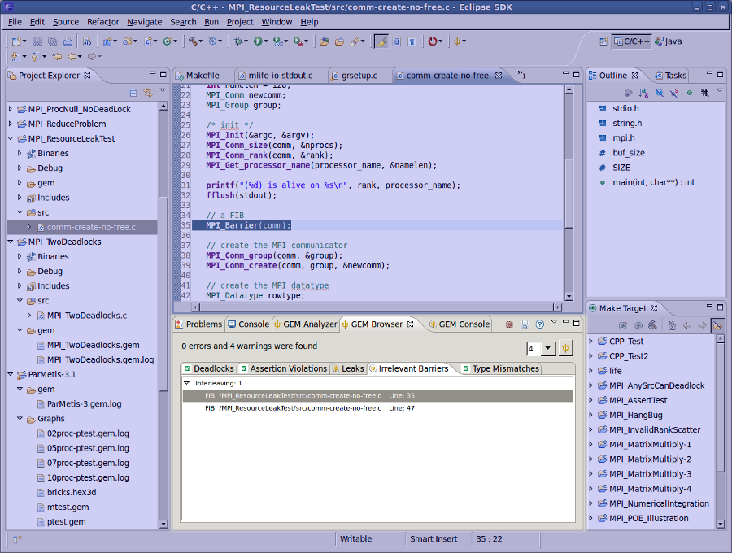

|
|
Browser View |
Before formally verifying an MPI C/C++ program, you need to set the number of processes for a particular run. Please refer to the Setting the Number of Processes Page.
When you formally verify an MPI C/C++ program, the Browser View and the Analyzer View will both be opened and depending on what is specified in preferences, either one may be brought to the foreground and given the active focus.
This highly functional view summarizes and categorically groups all of the errors and warnings found by GEM on a particular verification run. The summary label (just above the tabs) gives the user a quick overview of problems found. Errors and warnings are mapped to the corresponding source code lines in the Eclipse editor. The Browser View's tabs help the user to quickly locate and fix MPI errors flagged by GEM in their source code.
Below are listings of the errors and warnings summarized by GEM's Browser View, along with a more detailed descriptions.
The image below shows what the Browser View should look like along with an explanation of its components.
Below the summary is a section containing a tab for category of error or warning that was found in the code. By selecting a particular tab the user is given detailed information on each occurrence of that type of error or warning in their MPI code. Clicking on any of these occurrences takes the user to the offending line in the source code within the Eclipse editor.If there are no instances of the problem then there is a short message indicating as much. Furthermore, a user is shown which types of errors are presented via the icons of the tab (see icons directly below).
 Indicates that there are no instances of this particular type of problem.
Indicates that there are no instances of this particular type of problem.
 Tells the user that this problem is present in their code.
Tells the user that this problem is present in their code.
 The first drop down combo-box shows the current number of
processes and lets the user conveniently choose a new value for the next GEM run.
The first drop down combo-box shows the current number of
processes and lets the user conveniently choose a new value for the next GEM run.
This will re-run GEM on the current MPI project. This is semantically equivalent to choosing "Formally Verify MPI Program" from the toolbar button drop-down and is provided for convenience.
 Save to File - Saves a listing of all results to a local text file.
Save to File - Saves a listing of all results to a local text file.
 Get Browser Help - Opens the Eclipse help topic related to the Browser View page.
Get Browser Help - Opens the Eclipse help topic related to the Browser View page.
Note: This same functionality can be obtained through the context and pull-down menus for the view.
Back to Top | Back to Table of Contents
School of Computing * 50 S. Central Campus Dr. Rm. 3190 * Salt Lake City, UT
84112 * isp-dev@cs.utah.edu
License